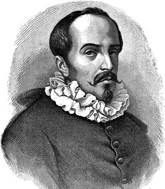
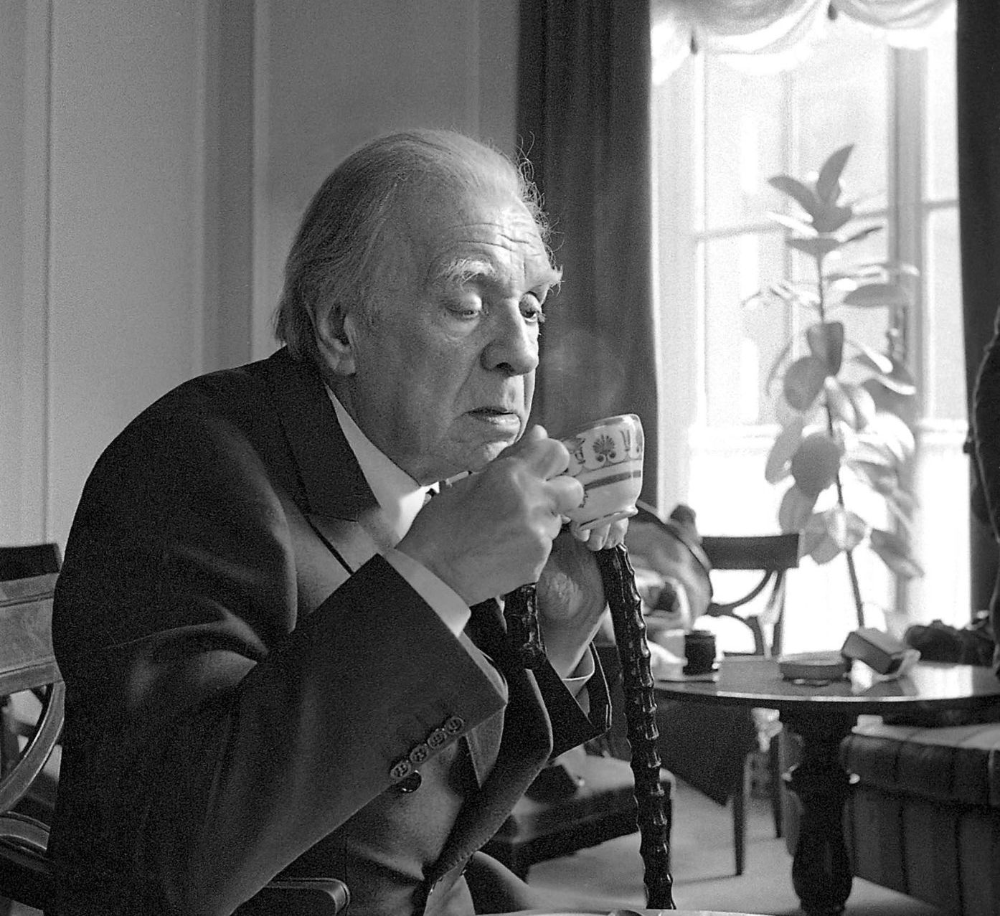
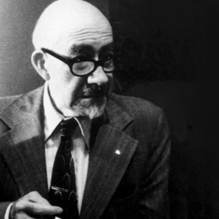
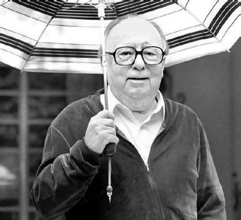
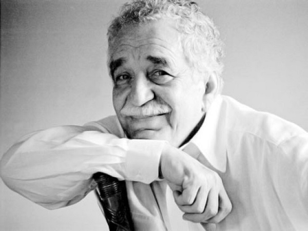
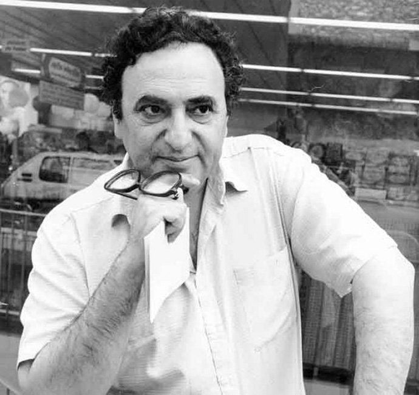
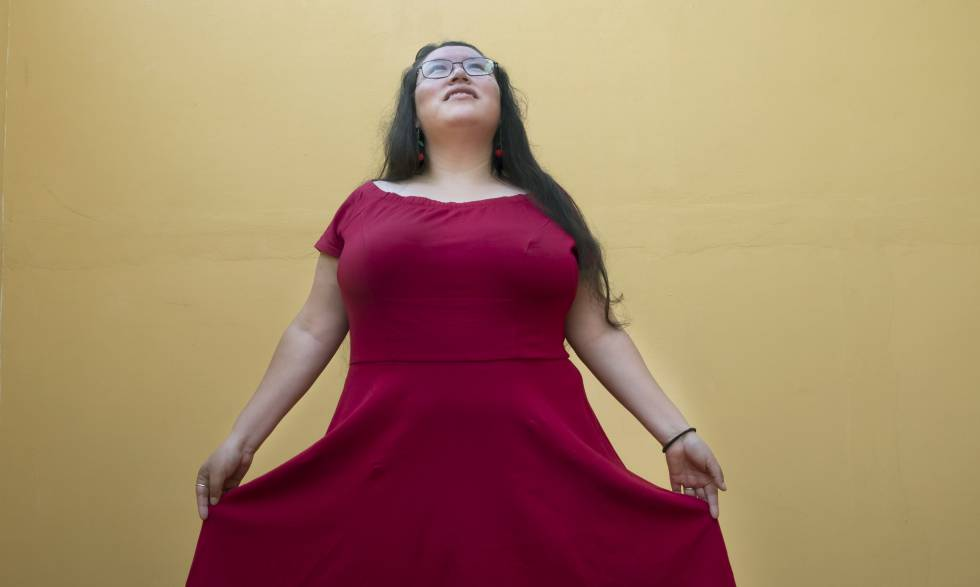

"Cronicas de Cristobal Colon"
Ver más
"La verdad sopechosa"
Ver más
"El florilegio"
Ver más
"Haikus de Un dia y de El jarro de flores"
Ver más
"Altazor"
Ver más
"El acercamiento a Almotasim"
Ver más
"El gesticulador"
Ver más
"El eclipse"
Ver más
"Chac mool"
Ver más
"Discurso de aceptacion del Premio Nobel"
Ver más
"La culpa es de los tlaxcaltecas"
Ver más
"El concepto de ficcion"
Ver más
"El futuro es hoy. Ideas radicales para Mexico"
Ver más
S.XV
Cristobal Colon (1451-1506)
S.XVII

Juan Ruíz Alarcon (1572/1581?-1639)
S.XIX
 Juan Jose Tablada (1871-1945)
Juan Jose Tablada (1871-1945)
S.XX
Juan Jose Tablada (1871-1945)
 Vicente García-Huidobro Fernández (1893-1948)
Vicente García-Huidobro Fernández (1893-1948)

Jorge Luis Borges (1899-1986)

Rodolfo Usigili (1905-1879)

Augusto Monterroso (1920-2003)
 Carlos Fuentes (1928-2012)
Carlos Fuentes (1928-2012)

Gabriel Garcia Marquez (1927-2014)
Elena Garro (1916-1998)

Juan José Saer (1937-2005)
S.XXI

Yasnaya E. Garcia